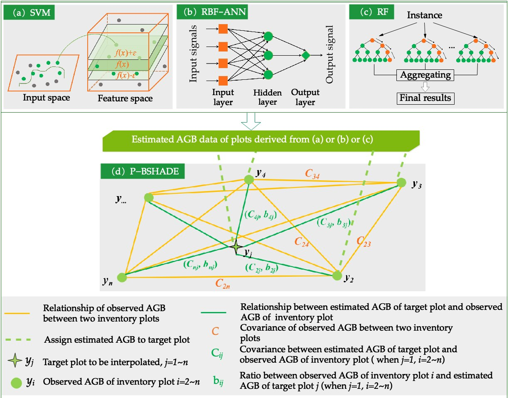
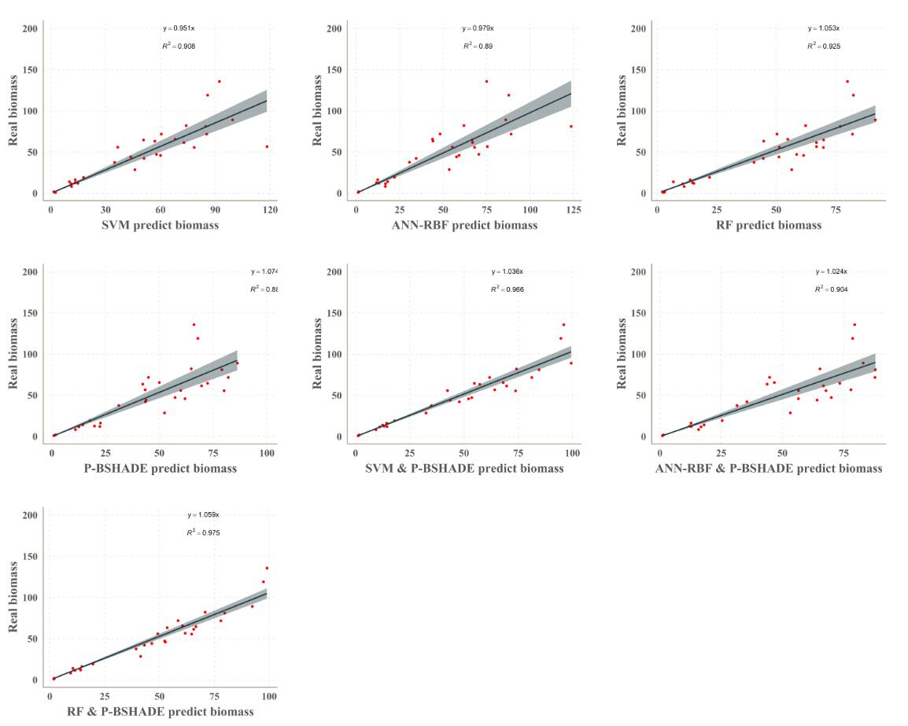
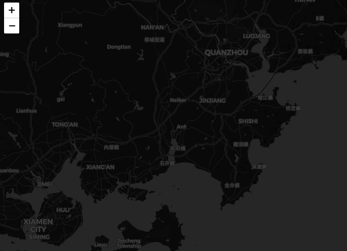
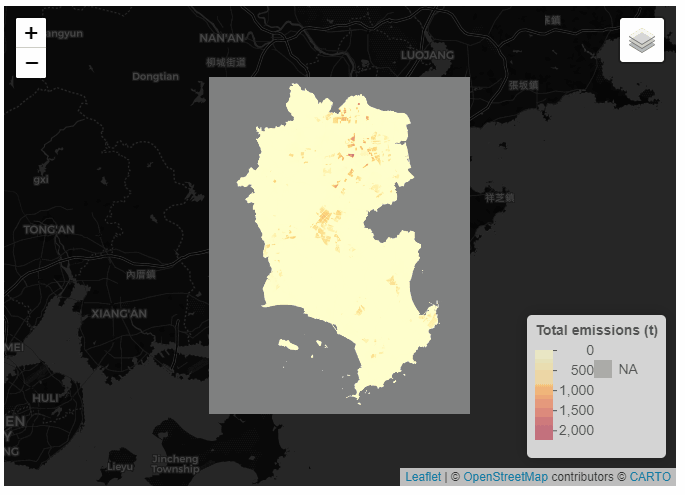
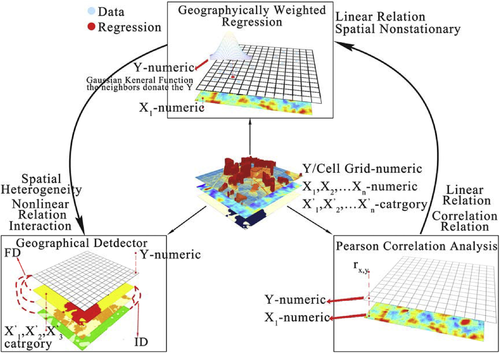
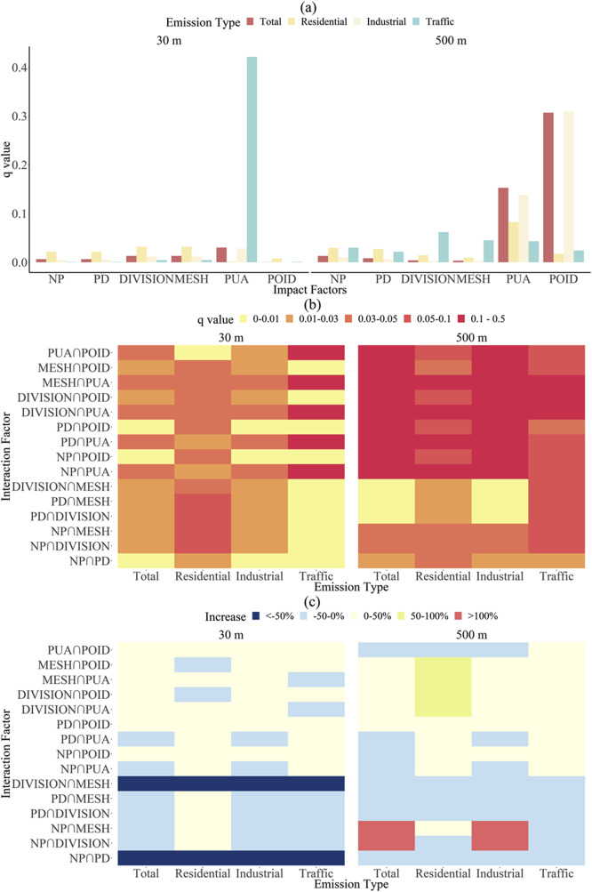
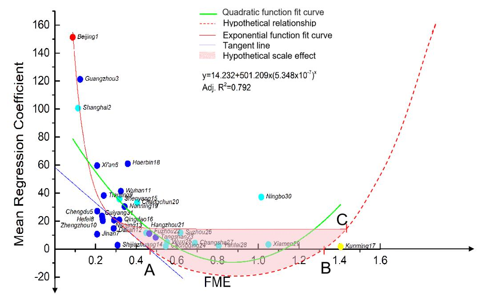
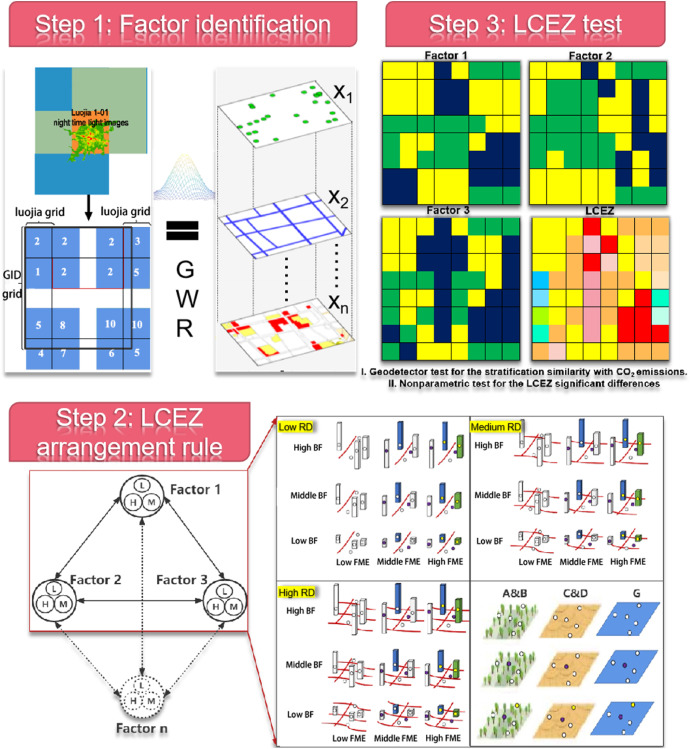

Urban Carbon Cycle

Cities are typical sources of carbon and a focus of climate-change mitigation. Although there is great potential for reducing emissions in cities, constructing low-carbon emission cities under the carbon-emission reduction target of the 2016 Paris Agreement remains challenging, as there is little scientific evidence for use by government decision-makers. To solve this problem, we must understand the urban carbon-cycle process in greater detail, especially the spatiotemporal variations in carbon sources and sinks. This project maps the urban carbon cycle from both directions: accurate carbon-sink mapping driven by forest inventory and machine learning, fine-scale CO₂ emission mapping with uncertainty assessment, the relationships between CO₂ emissions and urban form, and the application-oriented local carbon emission zone construction.
1 Carbon sink mapping with machine learning and spatial statistics
Forests are the only precisely measurable carbon sink. How can we map carbon sinks accurately at low cost? We proposed a combined approach that fuses machine learning with spatial statistics to construct a regional biomass map from non-representative sample units: three machine learning models (SVM, RBF-ANN, and RF) generate plot-level estimates, which are then scaled up through the P-BSHADE spatial statistical model. The combined models outperformed single models in accuracy, providing a practical pathway from sparse field inventory to wall-to-wall biomass mapping.

Figure 1. The framework for estimating (a–c) the machine learning models, (d) the P-BSHADE model, and the three models that combine machine learning with the P-BSHADE model ((a,d), (b,d) and (c,d)).

Figure 2. The accuracy of different methods for biomass estimation.
【动态】城市环境研究所在提升森林样地水平地上生物量的估算精度方面取得进展
The paper was published in Forests
2 Gridded CO₂ emission maps and uncertainty assessment
Cities are the main sources of CO₂ emissions and thus must abate emissions responsibly. We produced fine-scale (residential and transport) CO₂ emission gridded maps by fusing global downscaled and bottom-up elements, and compared them with existing inventories to verify the spatial patterns. Because large uncertainties exist at the urban scale, we further proposed an analytic workflow based on Monte Carlo simulation and bootstrap sampling to quantify the uncertainties propagated from the gridded model and the spatial proxies, finding that fine-resolution (30 m) maps carry a higher degree of uncertainty propagation.

Figure 3. Comparison between our CO₂ emission gridded map and other inventories.

Figure 4. The CO₂ gridded emissions maps and uncertainty maps.
[动态]城市环境研究所在城市尺度二氧化碳排放网格制图的不确定性传播分析取得研究进展
The database paper was published in Data in Brief, and the uncertainty analysis was published in Remote Sensing
3 CO₂ emissions and urban form
Understanding the spatial distribution of CO₂ emissions is the key to designing low-carbon city development policies. We compared the relationships between urban form fragmentation and CO₂ emissions through an analytic framework composed of Pearson correlation analysis, geographically weighted regression (GWR), and the geographical detector method. The results show that urban form indicators—especially the functional mixed entropy—significantly drive CO₂ emissions, with clear spatial heterogeneity across 31 Chinese cities, and the framework can be applied to urban agglomerations, megacities, and small towns.

Figure 5. The analytical framework.

Figure 6. Geographical detector results for fragmentation factors, PUA, and POID for CO₂ emissions from 4 sources.

Figure 7. The relation between the functional mixed entropy and the GWR mean regression coefficients in 31 cities. The red, yellow, light blue and blue dots represent the Type I, II, III and IV city, respectively.
The paper was published in Journal of Cleaner Production
4 Local carbon emission zone construction
To link research findings with planning practice, we constructed the local carbon emission zone (LCEZ), which links highly urbanized morphology profiles with CO₂ emission intensity to summarize the form characteristics for low-emission control in new communities, providing an operational bridge from carbon mapping to urban design guidelines.

Figure 8. The flowchart of the LCEZ construction. Step 1: Luojia1-01 night light image data is the proxy variable of the RTCE map. GWR is geographically weighted regression. Step 2: L is low, M is medium, and H is high; the solid line represents the three key factors; the point is POI; the column is BF; and the line is RD.
Shaoqing Dai
Postdoc
Publications
Evaluating the Marginal Contribution of Remote Sensing for Forest Biomass Estimation When Inventory Data Exists

Local carbon emission zone construction in the highly urbanized regions: Application of residential and transport CO₂ emissions in Shanghai, China
A predition method of subtropical forest biomass
Improving the accuracy of forest biomass estimate using source analysis and machine learning
A biomass estimation method by fusing plot data and forest inventory data
The importance of the functional mixed entropy for the explanation of residential and transport CO₂ emissions in the urban center of China
Improving Plot-Level Model of Forest Biomass: A Combined Approach Using Machine Learning with Spatial Statistics

Investigating the Uncertainties Propagation Analysis of CO₂ Emissions Gridded Maps at the Urban Scale: A Case Study of Jinjiang City, China

A spatial database of CO₂ emissions, urban form fragmentation and city-scale effect related impact factors for the low carbon urban system in Jinjiang city, China
More fragmentized urban form more CO₂ emissions? A comprehensive relationship from the combination analysis across different scales

Creating a Carbon Source and Sink Map by Coupling an Ecological Process Model with an Emission Inventory to Study a Carbon Balance
A GIS-based high spatial resolution assessment of large-scale PV generation potential in China
Improving the prediction accuracy of forest aboveground biomass benchmark map by integrating machine learning and spatial statistics
High-resolution mapping of direct CO₂ emissions and uncertainties at the urban scale
Talks
Application of night light remote sensing data in urban studies
Exploring the impact factors of uncertainties for urban carbon dioxide, a case of Jinjiang, Quanzhou, China
High-Resolution Mapping of Direct CO₂ Emissions and Uncertainties at the Urban Scale